Art.
Watercolor on paper — the senses, the body and emotions. A selection from the personal practice; the complete portfolio is available as a PDF.
Drawing is a conversation with one's own ideas.
Felipe Basa's art practice is figurative, with watercolor on paper as its principal technique. Part of his exploration comes from fragments of a sensory world he found himself distanced and forbidden from by his surroundings. Attempting to figure the ideal of an idealized reality — and to reproduce what had, until then, been hidden — marks part of his work.
In more recent works, Basa turns his gaze inward, experimenting with new possibilities, sensations, anxieties and physical and psychological pain — reflecting the difficulty of freeing his inner self while living with polyautoimmune diseases and periods of crisis and physical limitation.
Alongside these cathartic works involving bodies and the senses, Basa also brings his art into the making of architecture, materializing his imagination for spaces, forms and textures.
When words are missing, it is possible to begin with images. Felipe Basa

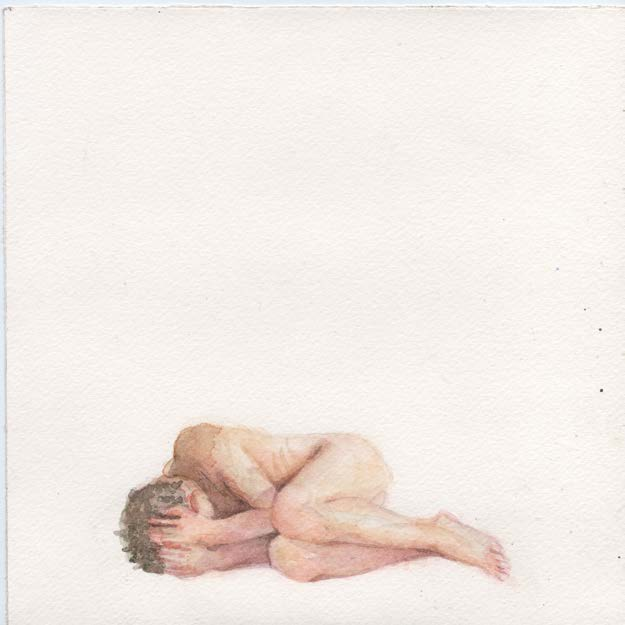
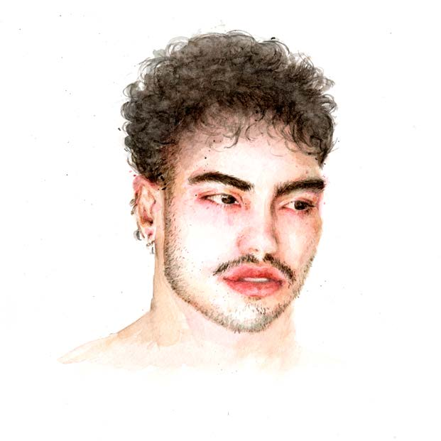

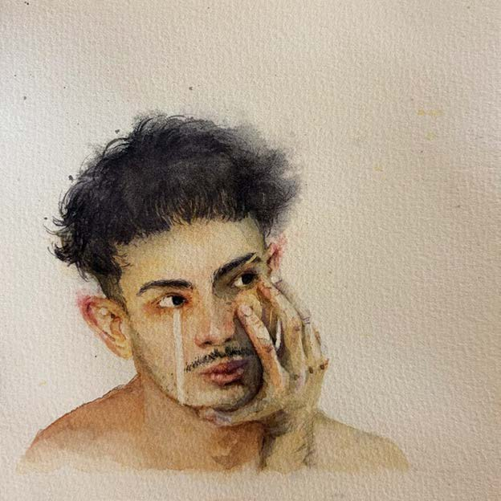
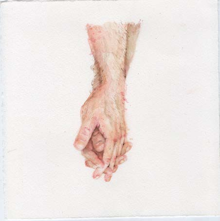
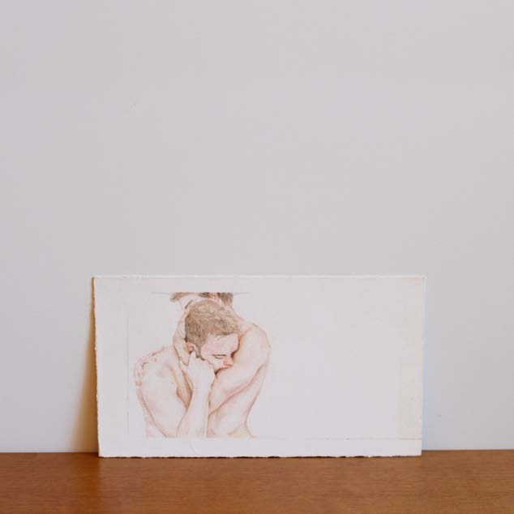
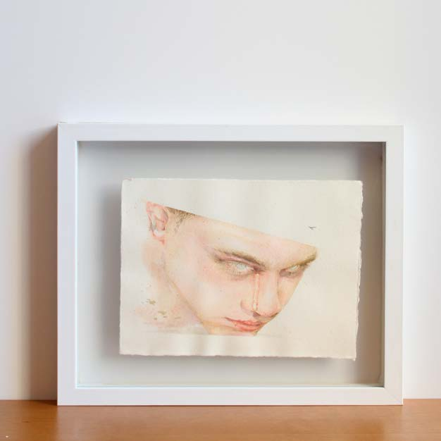
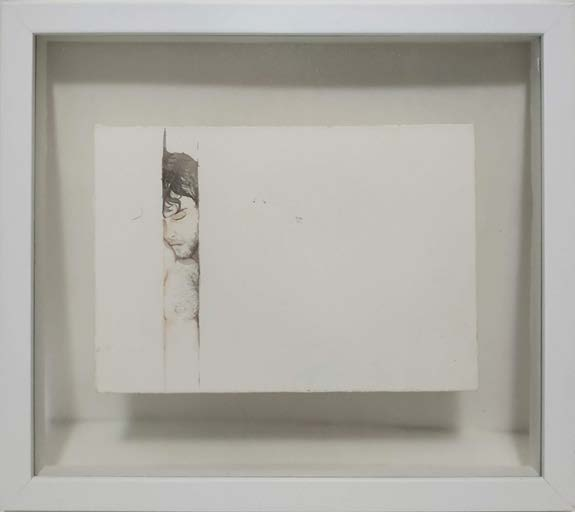
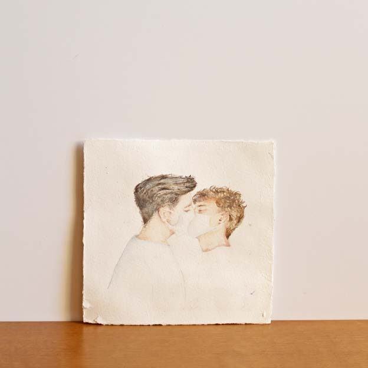
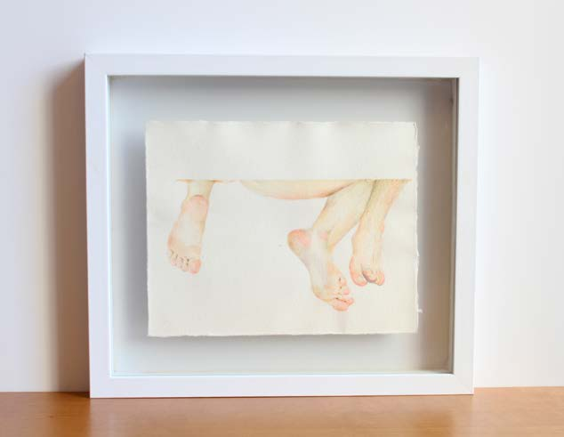
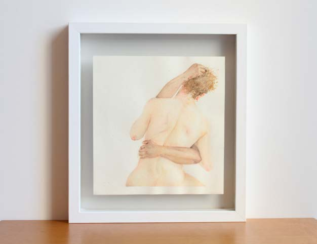
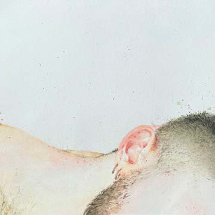
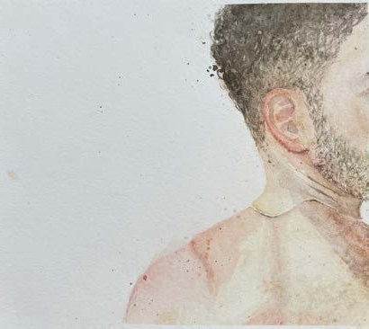
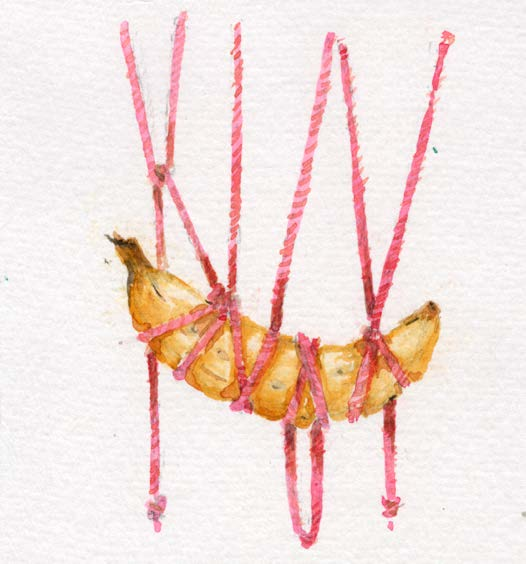
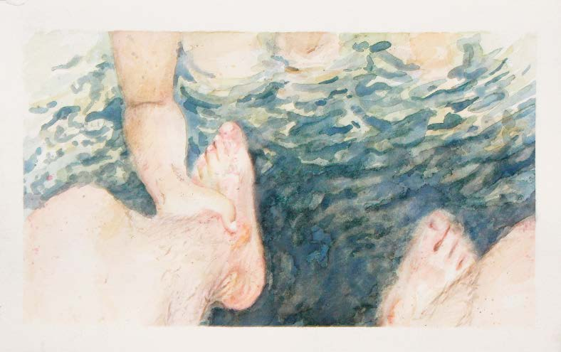
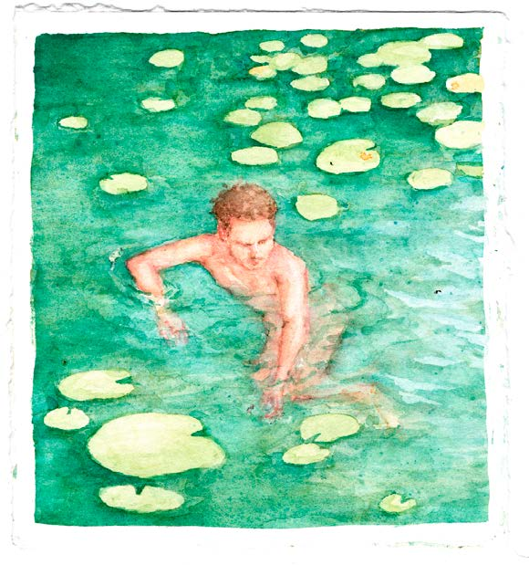
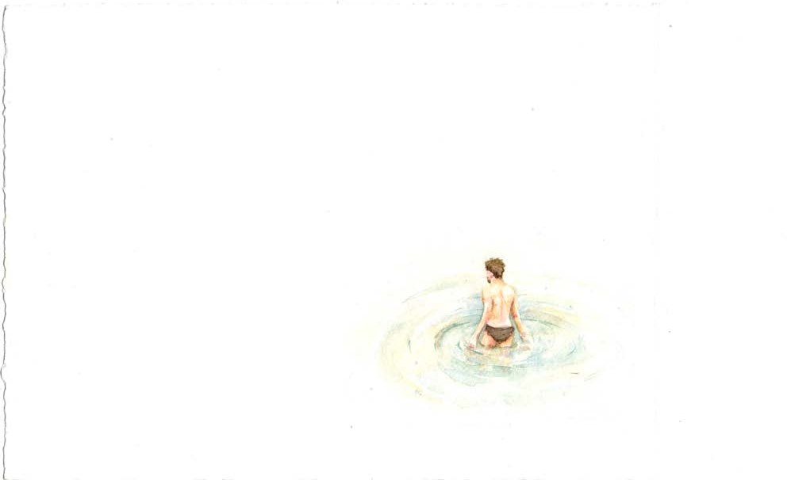
Artist, architect and urbanist from Goiás, Brazil, with formation through the Faculty of Visual Arts (UFG). Eight years of professional experience as an architectural watercolorist, alongside a personal art practice focused on the senses, the body and emotions for more than nine years.
Awarded the incentive prize at Fargo 23, where all of his selected works were sold — as at the 2021 edition, when two works selected by the FAV gallery also sold during the fair. He has also exhibited at the 3rd Festival Vórtice, at Vórtice Cultural (2024).
The complete art book — with every work, its details and availability — can be downloaded as a PDF.
Download art portfolio (PDF) ↓